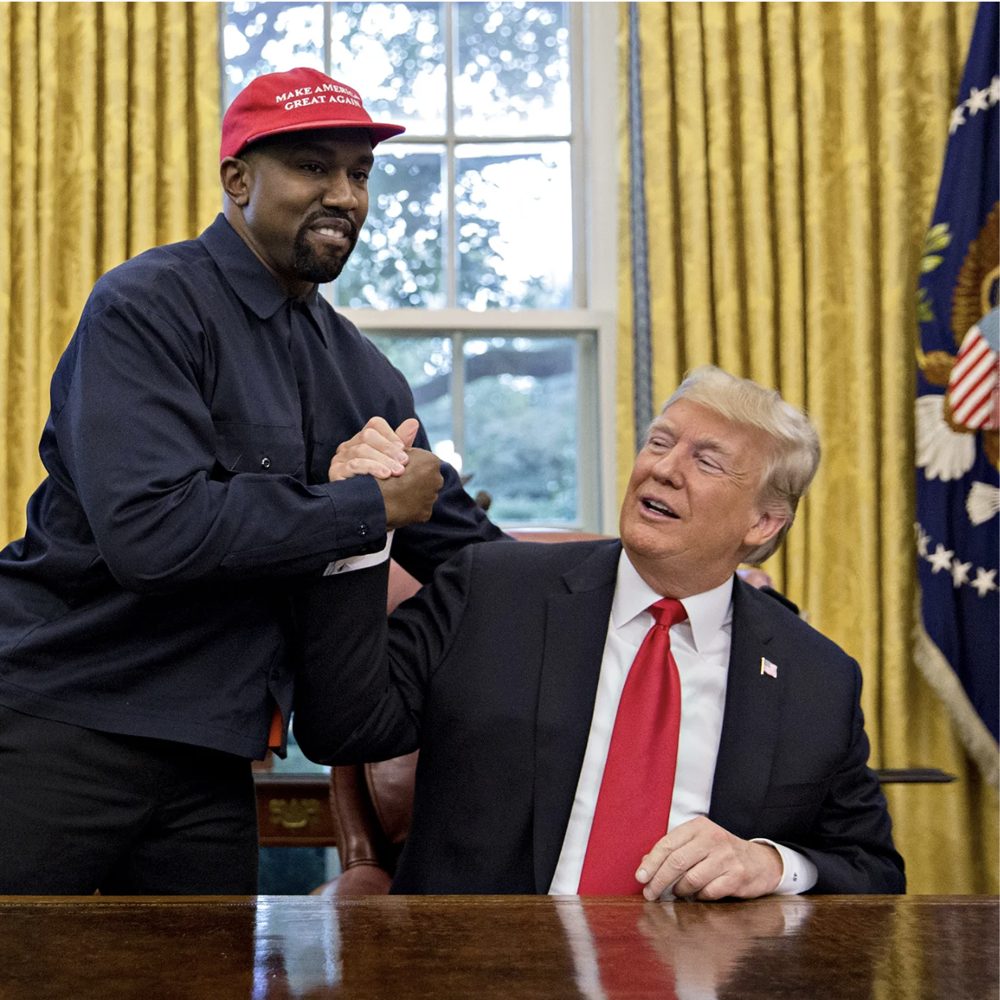
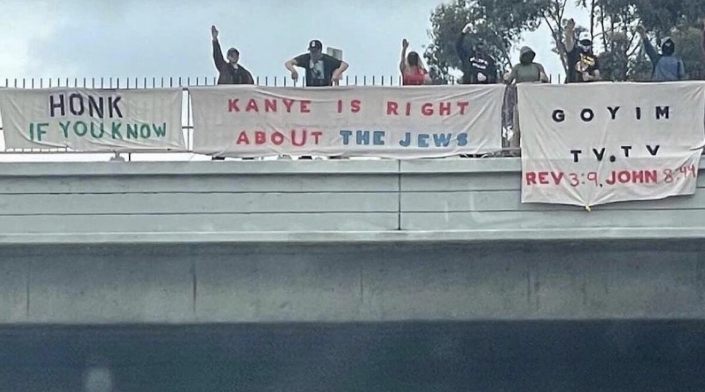
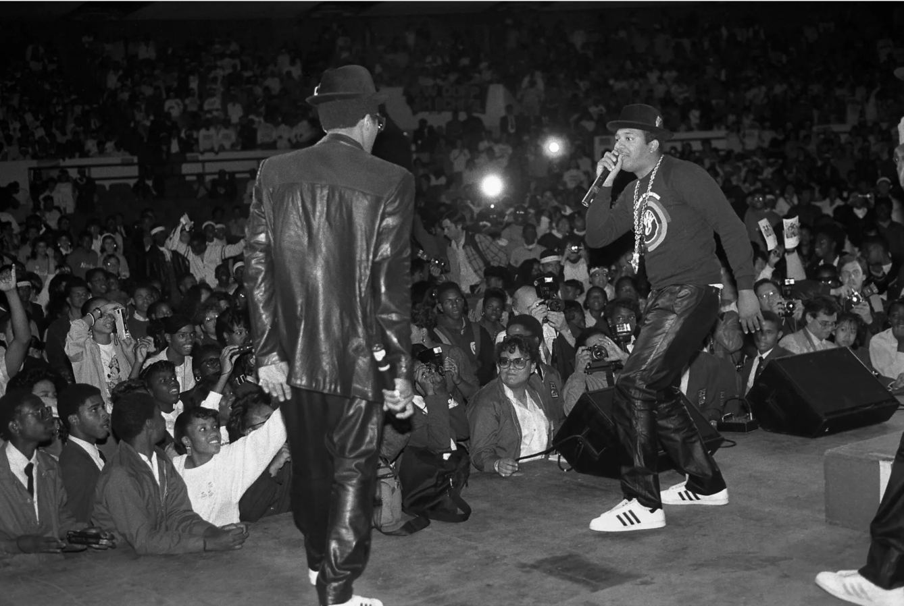

Track 02 · Riley Chapuis
[INTRO TEXT PLACEHOLDER — 3–4 sentences introducing Riley's argument about personal branding, purchased identity, Yeezy, and the association of commercial values with hip hop authenticity]
Portfolio — 4 Artifacts

Kanye meets with President Donald Trump in the Oval Office in 2018. While the meeting was supposed to focus on prison sentence reform, Kanye also heaped praise on the president and wore a "Make America Great Again" cap. At this point, Kanye's values begin to take on a political association. Photo by Andrew Harrer
NPR ↗Former Kanye fan Danny Shiff burns part of his Yeezy sneaker collection after Kanye's antisemitic remarks in 2022. This response marks the outrage and disappointment of Yeezy customers as Kanye's values changed.

Neo-Nazis hang banners over Interstate 405 in Los Angeles in 2022. Such demonstrations marked an uptick in antisemitic behavior emboldened by Kanye's rhetoric. Extremists embraced his new commentary.
NBC News ↗
Run DMC performs at Madison Square Garden in 1986. The group wears their Adidas Superstar sneakers, paving the way for the first non-athletic sneaker partnership. Photo by Chester Higgins Jr.
New York Times ↗